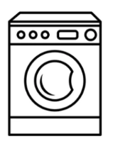

Statements of Work, Statements of Requirements and Descriptions
This job aid is intended as a refresher on statements of work, statements of requirements and the descriptions contained within them.
Statements of work and statements of requirements
A statement of work (SOW) describes the work required in clear, concise and meaningful terms. It includes the deliverables or the services or work needed to fulfill the contract.
A statement of requirements (SOR) is a description of the need without specifying the exact method to be used.
Both statements of work and statements of requirements define the problem at issue and include information that will provide context for the approving authority. They also contain an initial assessment of risk and basic financial information regarding what will be produced in the next stage.
Descriptions
A design specification is a detailed description of the item to be purchased. It can include drawings and required dimensions, sizes and measurements, materials, physical properties, quality test results, environmental, ergonomic and aesthetic considerations, anticipated repair and maintenance needs, the level of quality to be achieved, safety standards to be met, etc. It is the “what it is” of the item you are procuring.
The risks associated with using design specifications include: the more detailed the specifications, the more responsibility managers assume for design accuracy, as well as for any design errors, omissions or deficiencies. For example, if a contractor builds a boat exactly according to plan design and it sinks on launching, it is not the builder’s fault.
| Example of a design specification for a video |
|---|
|
Content must be in line with policies, directives, guidelines such as:
|
A performance specification sets the operational requirements of an item or an installation. In other words, it describes what the final installed product must be able to do. It outlines the product’s required output, functions or operations. It is the “what it does” of the product you are procuring.
Risks associated with performance specifications: greater burden on the contractor, who accepts general responsibility for the design and for meeting the performance requirement set out in the SOW or SOR. The resource might do exactly what was asked but it might not be what is needed if any key element is missed. For example, a small boat is needed for an assault team and it is envisioned that a rigid hull boat is required. Two boats meet the requirement: an inflatable boat and a rigid hull boat. If the durability of the inflatable boat is not taken into account in the SOW or SOR, this might be a cause of concern in a combat zone.
| Example of a performance specification for a handheld ultrasound machine |
|---|
|
Combination design and performance specifications incorporate the attributes of both the performance specifications and the design specifications.
Risks associated with combination design and performance specifications: risks are lower than if either design or performance were used alone.
| Example of a combination design and performance specification for a washing |
|---|

|
Purchase description specifications provide a brief but accurate description of the desired product. They list the product by national, international or industrial reference standards or brand names (for example, a 10-mm wrench, a Phillips screwdriver, a two-by-four).
Risks associated with purchase descriptions: should greatly reduce the risk of not meeting the requirements.
| Example of a purchase description specification |
|---|
|
Need more examples? Visit the buyandsell.gc.ca website and search among the tenders for additional samples.